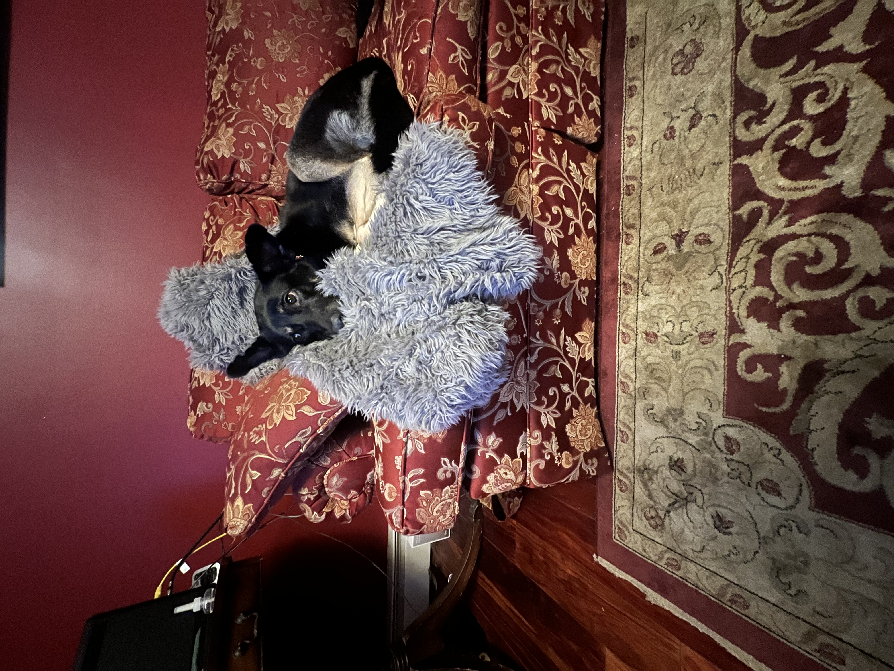
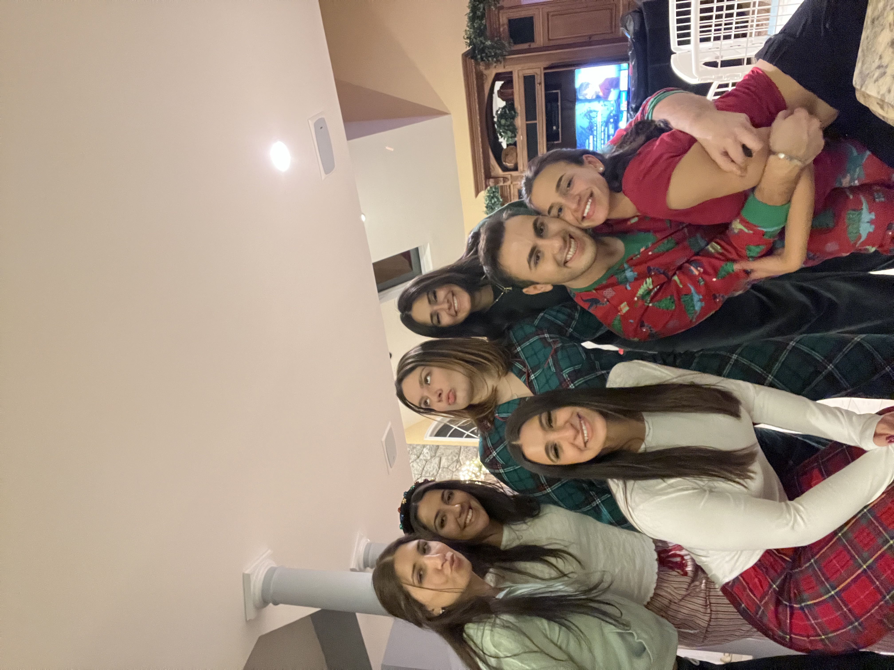
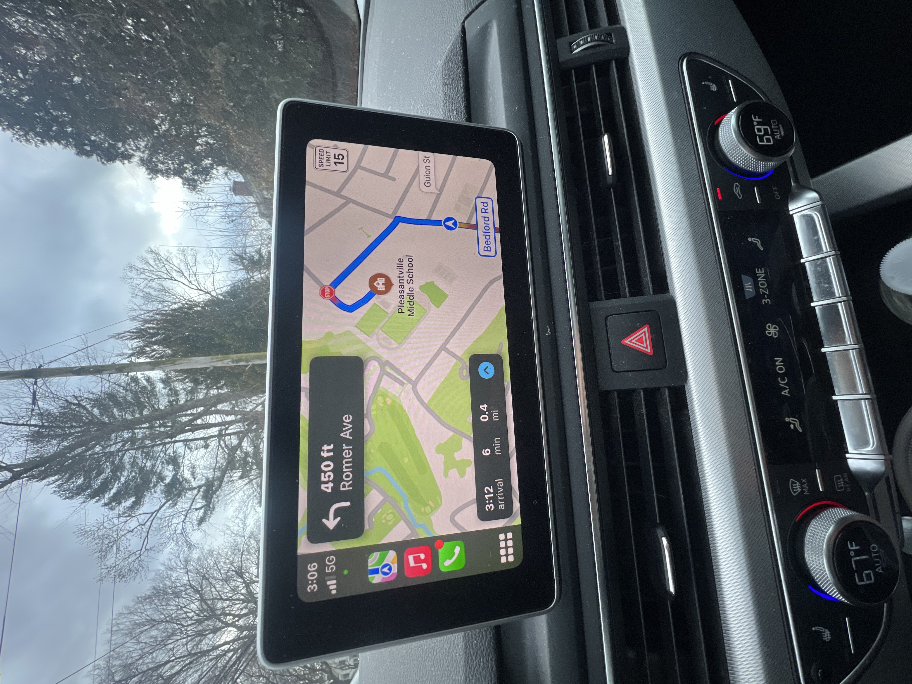
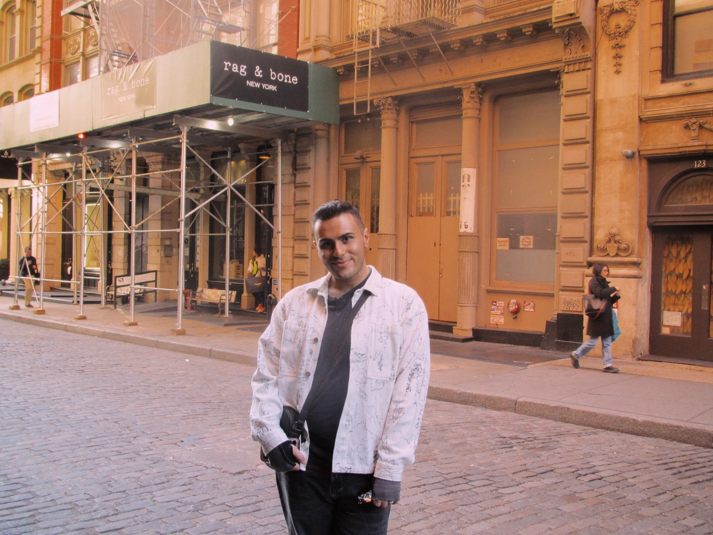
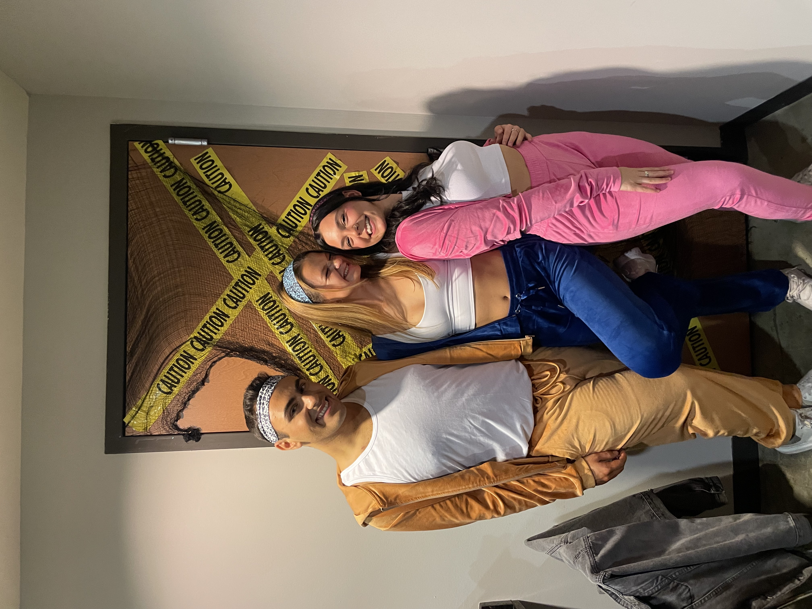
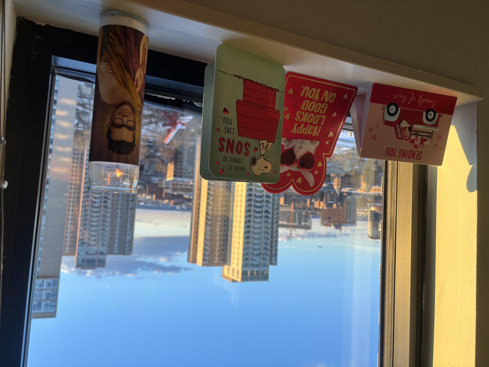

Exploring the Image Analysis Expertise of Llava AI
Introduction
In 2024, AI image analysis models like Llava-v1.6-34b are pushing the boundaries of what machines can comprehend. Today, I want to test the latest family of open weight models, Llava, and their abilities. The model, Llava-v1.6-34b, lets you upload images and enter a prompt. The way in which I wanted to use it was to detect and extract specific information or make inferences based on visual cues in a given photo. All the prompts have in common that they are asking the AI tool to analyze, identify and provide contextual details about the subjects, objects, and surroundings present in the photographs. Join me as I share the intriguing results of my experiment with Llava AI on Chat.lmsys.org.
The Experiment
My Four-Legged Friend Shelby

My first test was straightforward: “What type of dog do I have?” Llava AI confidently identified my dog as a German Shepherd, a testament to its breed-recognition capabilities. But how did it pinpoint this? Perhaps it was her adorable ears!
A Friend Indeed

The next challenge was more subtle: “I am the only boy in the photo, who appears to be my closest friend?” The answer was what I expected: “The girl who appears to be closest to you is the one on your left, as she is hugging you and has her arm around you. She seems to be enjoying the moment and is likely a close friend.”
The AI used physical cues to make the best educated guess it could. It cautiously suggested she is “likely a close friend,” a wise choice of words since a snapshot can’t capture the full story.
Christmas in New York
“Where was this photo taken?” I asked. The AI confidently responded “New York City, specifically in front of the Christmas tree at Rockefeller Center.” A round of applause for Llava and its specificity!
A Misguided Journey

However, not all roads led to success. When asked, “Where was I driving to?” the AI missed the mark, not quite reading the navigation system correctly. It said: Based on the image you provided, it appears you were driving towards “Romer Ave” with a destination of “Blanshard Middle School” on “Bedford Rd”. The GPS navigation system is indicating that you are 460 feet away from your destination.
For me, this shows how AI can be bad at analyzing text in images, which is something it is known to fall short In. I believe this to be true because you can clearly see that my final destination is Pleasantville Middle school and the destination is 0.4 miles away.
Back to Philly we go!

Back on track, the AI correctly identified the Liberty Bell Center in Philadelphia. Despite the photo’s clarity and obvious cues, it’s still reassuring to see the model’s accuracy.
Spanish Architecture
A slight hiccup occurred when the AI mistook Barcelona’s Parc de la Ciutadella for Madrid’s Puerta de Alcalá. Close, but not quite, even though the correct country was a plus. Maybe the tool is familiar with Spanish architecture?
All roads lead back to New York

In a New York state of mind, the AI pinpointed the West Village from a “Rag & Bone” sign, despite the actual location being Soho. Even though they got the neighborhood wrong when asked “where was this photo taken?”, they showed a much better display of text analysis, given earlier inconsistencies.
Cheetah Mishap

Our Halloween attire stumped the AI tool, which failed to recognize our Cheetah Girls-inspired ensembles. I asked, “Based on this photo, what were we for Halloween?” and they responded with: you and your friends are dressed in outfits that seem to be inspired by a casual, streetwear style rather than traditional Halloween costumes. The person on the left is wearing a white tank top with a brown jacket and pants, the person in the middle is in a white crop top with blue pants, and the person on the right is wearing a pink top with pink pants. They made no acknowledgment of our cheetah headbands even though it is clear that we wearing them with our tracksuits, resembling the cheetah girls. We even picked the colors that they wear in the movies so I was surprised this was not apparent. Sometimes, context is key.
Cuisine Confusion

I used a photo from a family BBQ to pose the question of: based on the food in this picture, what is my ethnicity? The AI’s guess of Mediterranean/Middle Eastern was far from the Italian spread before us. They specifically answered with, “There are plates of what appear to be hummus, olives, and possibly tabbouleh or a similar grain salad, as well as a dish that could be a type of kebab or shish kabob. These foods are often found in the culinary traditions of countries like Lebanon, Syria, Jordan, and other regions with similar culinary influences.” I believe that this photo shows typical Italian appetizers such as Bruschetta, Pistachio Mortadella, and a Caprese salad so their answer is puzzling!
A Valentine Victory

Finally, I had a sweet success with the AI correctly deducing Valentine’s Day from the themed cards. I asked: What holiday did I receive these cards for? and they responded with the correct answer and evidence like, “The cards in the image feature Valentine’s Day themes, with phrases like”Happy Valentine’s Day” and “Sending you love.” What a lovely end to an eventful experiment!
Conclusion
So, in a nutshell, the Llava AI model did a pretty awesome job at recognizing and interpreting visual cues in pics. It could correctly identify objects, people, and landmarks, and even make some smart guesses about the context and relationships between things in the photos. But, it’s not perfect and sometimes it messed up, like when it misread text or didn’t recognize certain cultural landmarks. At the end of the day, while Llava AI can give us some helpful info based on its analysis, we still need human judgment and contextual knowledge to really get what’s going on in a photo. All in all, Llava AI has a lot of potential in the image analysis game and is definitely a useful tool for getting info and making inferences from visual data.